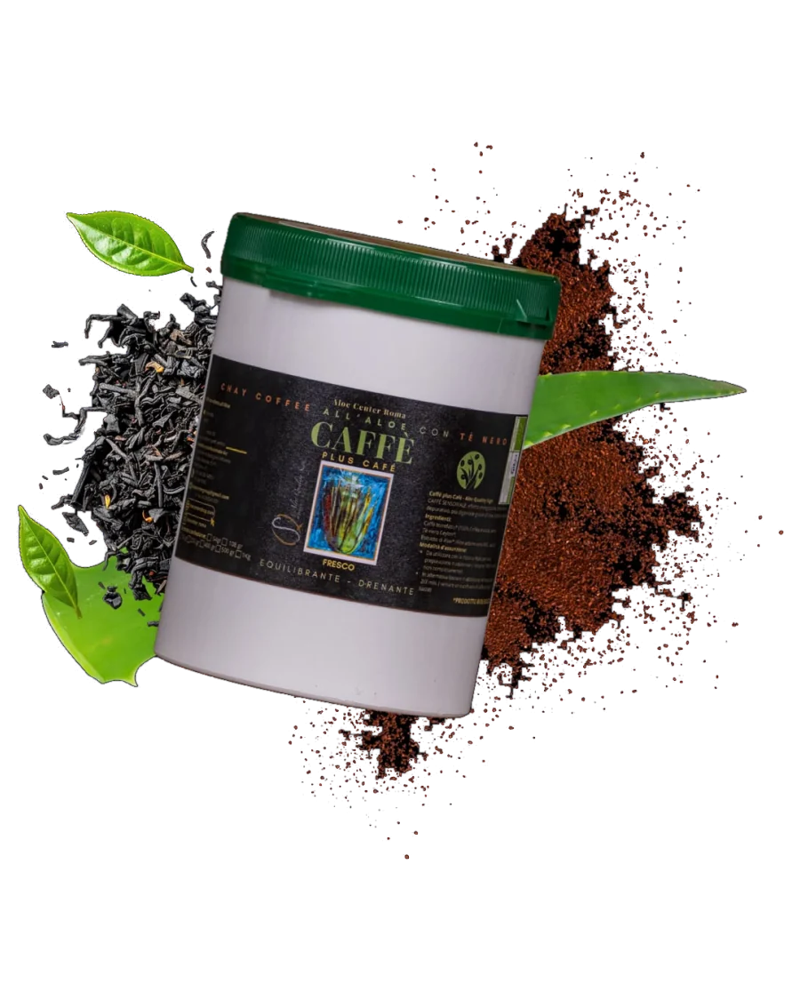

Prodotti / Caffè Plus Café
Chay Coffee all'Aloe con tè nero
17,99 €
Spedizione gratuita in Italia sopra i 10 €, in 2 giorni lavorativi. Estero 4/5 giorni, 10,99 €.
Caffè Plus Café Premium: caffè Arabica bio gourmet monorigine del Sud America, puro tè nero Ceylon e il principio attivo dell'Aloe Arborescens, estratto in 9 anni di lavorazione.
Caratteristiche: aroma intenso, corpo pieno, leggermente amaro, profilo aromatico complesso.
Benefici: effetto energizzante, drenante e depurativo, più digeribile grazie all'aloe, stimolo naturale.
A cosa serve: a chi vuole vivere un'esperienza unica, avvolta da sapori e aromi orientali, accompagnati dalla giusta intensità del caffè.
100% naturale: certificato biologico. Nessun conservante, nessun colorante: solo caffè tostato, Aloe Code e tè.
Unico al mondo: l'unico Chay Coffee all'Aloe con tè al mondo, frutto di 33 anni di esperienza, prodotto interamente in Italia.
Bollino Aloe Quality Sign: garantisce l'utilizzo dell'estratto originale Aloe Center, 100% biologico, senza conservanti né additivi.
Ingredienti
Modalità d'assunzione

Il 5% di sconto, a chi si iscrive.
Rispondi a due domande e lascia i tuoi dati: ti arriva il codice sconto per email, poi solo promozioni e novità sui nostri prodotti.